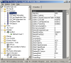
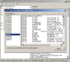
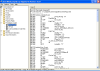
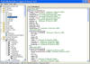
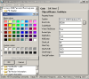

<table width=600>
<tr><td>

<p align="center"><b><font size="6" face="Arial">Semi VB Decompiler</font></b><br>For Visual
Basic 4(32bit)/5/6 (Native/P-Code)</p>
<b>Information:</b><br>
<p align="justify">Semi VB Decompiler a tool to use to recover your lost Visual
Basic 4(32bit)/5/6 code from an exe, dll, or an ocx. Allows you to extract the project file, all forms, api
calls (sometimes the parameters are recovered if they are in the api database),
procedures names, events names, and P-Code tokens if the application was
compiled to P-Code. Also comes with a form and control editor which you can use
to make changes to the forms and controls then save the changes to the file.
Check out the comparison table below, to see how our product compares to other
products on the market.</p>
<b>Features:</b><br>
<ul>
  <li>Extracts all forms and resources.</li>
  <li>
  Allows you to edit the controls and forms properties of an exe program and save them!</li>
  <li>P-Code Event/Procedure decompile to P-Code tokens.</li>
  <li>Shows the P-Code's tokens and attempts to convert the code to VB code..</li>
  <li>Supports Visual Basic exe's, dll's, and ocx files.</li>
  <li>Shows metadata information for .Net exe files and lists the streams information.</li>
  <li>Gets the procedures names for forms and class files.&nbsp; If they were public.</li>
  <li>Recovers the events of the common controls.</li>
  <li>Recovers the api's called and in some cases recovers the full api call including parameters.</li>
  <li>Shows the exe's imports from&nbsp; msvbvm50.dll&nbsp; and msvbvm60.dll</li>
  <li>Allows you to view the Visual Basic Structures in the exe.</li>
  <li>Recovers the number of procedures in forms, modules, and classes.</li>
  <li>Decompile from offset for VB 5/6, helpful for packed applications.</li>
  <li>Startup form patcher, change which form is displayed first.</li>
  <li>Syntax coloring</li>
  <li>Shows the offsets of key GUI components.</li>
  <li>Generates a report on the file and has a patch report as well.</li>
  <li>Multilanguage support! Currently supports Dutch, French, German, Italian, Portuguese, and Spanish.</li>
  <li>Cheap Price! Compared to others who want $50 to $150</li>
  <li>And much more! Updates added all the time and you get them for no charge!.</li>
</ul>
<b>System Requirements:</b><br>
<ul>
  <li>Windows XP and higher</li>
</ul>
<b>Screenshots:</b><br>

<a href="screen1.PNG"></a>
<a href="screen2.PNG"></a>
<a href="ssPcode.png"></a>
<a href="vbdeco.jpg"></a>
<a href="screen3.PNG"></a>
 
 <br>
<b>Comparison Table:</b><br>
<table border="1" cellspacing="1" width="100%" height="183">
  <tr>
    <td width="25%" height="19">&nbsp;</td>
    <td width="25%" height="19"><b>Semi VB Decompiler</b></td>
    <td width="25%" height="19"><b>VBRezq</b></td>
    <td width="25%" height="19"><b>VBReformer</b></td>
  </tr>
  <tr>
    <td width="25%" height="19">Recovers Project File</td>
    <td width="25%" height="19">Yes</td>
    <td width="25%" height="19">Yes</td>
    <td width="25%" height="19">Yes</td>
  </tr>
  <tr>
    <td width="25%" height="17">Recovers Forms</td>
    <td width="25%" height="17">Yes</td>
    <td width="25%" height="17">Yes</td>
    <td width="25%" height="17">Yes</td>
  </tr>
  <tr>
    <td width="25%" height="19">VB6 Support</td>
    <td width="25%" height="19">Yes</td>
    <td width="25%" height="19">Yes</td>
    <td width="25%" height="19">Yes</td>
  </tr>
  <tr>
    <td width="25%" height="19">VB5 Support</td>
    <td width="25%" height="19">Yes</td>
    <td width="25%" height="19">Yes</td>
    <td width="25%" height="19">Yes</td>
  </tr>
  <tr>
    <td width="25%" height="19">VB4(32bit) Support</td>
    <td width="25%" height="19">Yes</td>
    <td width="25%" height="19">Yes</td>
    <td width="25%" height="19">No</td>
  </tr>
  <tr>
    <td width="25%" height="38">Ocx/DLL Support (5/6)</td>
    <td width="25%" height="38">Yes</td>
    <td width="25%" height="38">Yes</td>
    <td width="25%" height="38">Yes</td>
  </tr>
  <tr>
    <td width="25%" height="38">Identifies Procedures and events (5/6)</td>
    <td width="25%" height="38">Yes</td>
    <td width="25%" height="38">Yes</td>
    <td width="25%" height="38">Yes</td>
  </tr>
  <tr>
    <td width="25%" height="38">Recovers P-Code&nbsp; procedures and events
    (5/6)</td>
    <td width="25%" height="38">Yes</td>
    <td width="25%" height="38">No</td>
    <td width="25%" height="38">No</td>
  </tr>
  <tr>
    <td width="25%" height="38">Recovers full Api calls (5/6)</td>
    <td width="25%" height="38">Yes</td>
    <td width="25%" height="38">Yes*</td>
    <td width="25%" height="38">Yes*</td>
  </tr>
  <tr>
    <td width="25%" height="37">Recovers Native Code</td>
    <td width="25%" height="37">No</td>
    <td width="25%" height="37">No</td>
    <td width="25%" height="37">Barely**</td>
  </tr>
  <tr>
    <td width="25%" height="38">Shows internal VB Structures</td>
    <td width="25%" height="38">Yes</td>
    <td width="25%" height="38">No</td>
    <td width="25%" height="38">No</td>
  </tr>
  <tr>
    <td width="25%" height="38">Allows you to edit forms/controls and save it to the exe.</td>
    <td width="25%" height="38">Yes</td>
    <td width="25%" height="38">No</td>
    <td width="25%" height="38">Yes</td>
  </tr>
  <tr>
    <td width="25%" height="37">Shows msvbvm60.dll and msvbvm50.dll&nbsp; imports and other Portable
    executable information</td>
    <td width="25%" height="37">Yes</td>
    <td width="25%" height="37">No</td>
    <td width="25%" height="37">Yes</td>
  </tr>
  <tr>
    <td width="25%" height="38">VB Obfuscator</td>
    <td width="25%" height="38">Yes</td>
    <td width="25%" height="38">No</td>
    <td width="25%" height="38">No</td>
  </tr>
  <tr>
    <td width="25%" height="38">VB 1/2/3 Binary Form To Text Converter</td>
    <td width="25%" height="38">Yes</td>
    <td width="25%" height="38">No</td>
    <td width="25%" height="38">No</td>
  </tr>
  <tr>
    <td width="25%" height="38">Price:</td>
    <td width="25%" height="38">$30</td>
    <td width="25%" height="38">$150</td>
    <td width="25%" height="38">49 Euros = about $68 dollars as of 1/27/2010</td>
  </tr>
</table>
*Does not recover parameters of api calls.<br>
**Recovers some basic information nothing really useful.<br>
<b>Recent Updates:</b><br>
<p align="justify">
Added a helper application called Api Add which allows you to add API's to the Semi VB Decompiler API Database.
<br><br>
Updated Native procedure decompile dissembles faster and added some
native dissemble options to the options screen. Also updated decompile from
offset, now verifies the file has a VB5! signature. For .Net applications added
the view console under the Tools menu. Added data directories to the PE Optional
Header list.<br><br>
Two minor little fixes on project generation. Fixed a bug with directory listbox and bug in VBP generation.
<br><br>
Changed how the P-Code property database worked the
VTable information is now directly pulled form the typelib of VB6.OLB, this
means that Semi VB Decompiler now has complete support for all properties of the
standard VB toolbox controls.
<br><br>Updates over the last month, added menu for easy
access to the other tools,&nbsp; added over 100 more P-Code properties to the
database. Fixed some handling of certain VB files.
<br><br>Added another tool to Semi VB Decompiler a VB
Obfuscator for Visual Basic 5/6. What does an Obfuscator do? Well it makes the
decompiled code harder to read and understand, making a little tougher.&nbsp;&nbsp;
My version obfuscates the object names, and control names for Visual Basic 5/6
programs.
<br><br>Version 0.07 released.&nbsp;&nbsp; Now using a property
sheet control to display and edit control/form properties.&nbsp; Under the
treeview, the controls now have there own icons to recognize the control type.&nbsp;
More properties for the controls added.&nbsp; Improved the speed on various
functions. Under the tools menu there is now a link to the FileReport.txt.
Working on a system to handle external controls.
</p>

<b>Purchase:</b><br>
You can purchase this product for only $30 today! And when
there are updates to the Semi VB Decompiler you get them for free!<br>
<a target="_blank" href="https://www.e-junkie.com/ecom/gb.php?i=1&c=single&cl=601">
</a>

<p>We accept the following methods of payment:</p>
<a onclick="javascript:window.open('https://www.paypal.com/cgi-bin/webscr?cmd=xpt/popup/OLCWhatIsPayPal-outside','olcwhatispaypal','toolbar=no, location=no, directories=no, status=no, menubar=no, scrollbars=no, resizable=no', width='400', height='350');"></a>

</td></tr>
</table>